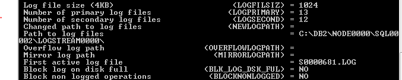
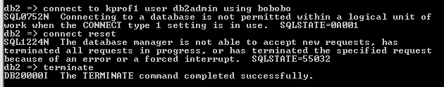
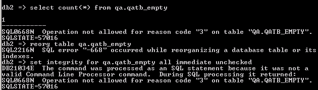

How to manage DB2 server spaces?
After you use db2 database for a while, there are db2diag,log and transaction logs generated, which
would consume spaces of your server machine. Below steps gives you a way to clean up those logs to free up some spaces.
1 | db2 => set database LOGARCHMETH1 = logretain |
you would see:

check “Path to log files” and “First active log file” items in the configure list, then issue a prune logfile command.
1 | db2 => prune logfile prior to S0000681.LOG |
you would notice that in C:\DB2\NODE0000\SQL00002\LOGSTREAM0000, all the log files prior to S0000681 would be deleted.
then we also need to manage db2diag.log. For windows, db2diaglog may locate in C:\Users\All\Users\IBM\DB2\DB2COPY1\DB2\DIAG0000 or C:\ProgramData\IBM\DB2\DB2COPY1\DB2\DIAG0000
for Unix, it may locate in /db2inst1/sqllib/db2dump
first make sure DB2 is stopped, if not, issue “db2 stop force” command to make it stop. then delete db2diag.log file or backup it to another place, then restart DB2 using “db2start” .
how to handle DB2 log full issue?
[^note]: do not use delete from table to delete a large table, in db2_bulkload_api testing unit, there is a job to load 200 million row into a DB2 table, using delete from table command would easily cause log file full. Try to load a null file to the table or use drop table then re-create method to empty the table.
you may have similar error message for log full:
SQL0964C The transaction log for the database is full.
so you need to enlarge the log file size using below commands.
1 | db2 => update db cfg using LOGFILSIZ 7900 |
how to truncate a table or move data from a table?
in DB2, there is no truncate command, we can use other commands to fulfill this function.
1 | on widowns: |
how to check DB2 connections when there are too many connections existed?
sometimes you would encounter SQL1035N error when you try to connect or perform an action to a database.
SQL1035N The database is currently in use.
First to check all the current opened user connections, then to shut down them all.
1 | db2 => db2 list applications show detail |
connecting to a database is not permitted within a logical unit of work when the connect type 1 setting is in use.
use terminate to solve this issue.

how to handle DB2 table is in load pending state issue?
Use “load empty file…terminate into …” method, this issue happens when loading large amount of data into a table.

how to handle table space access not allowed issue?
1 | db2 => db2 list tablespaces show detail |
you would see :
1 | Tablespace ID = 2 |
if you encounter table space access not allowed issue, you need to check your tablespaces status, usually you would find that at least one of your tablespace would have state=0x0020, this state indicates that this tablespace is in abnormal state. What you need to do is to back up the database to bring tablespace back to normal.
1 | db2 => db2 backup db |